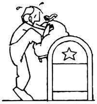
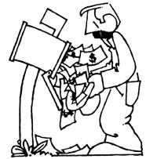

One of the most persistent dreams of the great majority of would-be self-employed entrepreneurs is "have a nice little mail-order business that I can run all by myself entirely from the kitchen table".
There's also no doubt, though, that there's an awful lot of downright false and untruthful information being circulated about the mail-order business (especially the "kitchen table" variety) today . . . usually spread by rather shady people who have something to sell to the folks they lure into believing in The Dream.
Which is one of the main reasons why MOTHER is pleased to present the following "unvarnished truth" about the small-scale mail-order game as explained by home-business authority Lillian Borgeson.
Well, MOTHER (which has always been almost entirely a mail-order business) was started eight and a half years ago on a kitchen table (even though she outgrew that original kitchen within weeks of her launching) and she's getting stronger every year. So there's no question such an operation can grow and prosper.
"Make a million in mail order," says the ad. "Easy ... fast ... start on a shoestring, work at home in your spare time . . . GET RICH QUICK!"
"Wow," you say. "That sounds too good to be true." And you're right.
It is a fact that you can start a mailorder business working part time at home. Furthermore, home can be anywhere with mail service, including a sun-powered homestead in Far Boondocks, New Mexico. But it's also a fact that hardly anyone makes a million in mail order, and nobody does it overnight.
The process of building a mail-order business is slow, demanding, and relatively risky, especially at first. In fact, the failure rate for beginners is probably higher than in any other type of home business. One reason, no doubt, is that the misinformation rate for beginners is equally high . . . especially for those who read and believe the get-rich-quick come-ons. So here, for a change, are some unvarnished truths. Listed below are the ten questions most often asked by mail-order beginners. The answers will let you know what it really takes to get started in the business with some reasonable hope of success. They should also help you to predict whether you can or can't make it in mail order.
Not necessarily, but it does take certain aptitudes. In mail order you sell through advertising alone, to customers you never see. So any background in advertising is helpful, and a knack for writing clear, punchy phrases is essential.
What few beginners realize, though, is that mail order also demands methodical organization and a good head for grubby detail. Excellent recordkeeping is a must. You have to pay painstaking attention to nickel-and-dime differences in costs and returns, and you can expect to spend a lot of time sweating over a hot calculator.
Here's a typical example. Let's say you're making and selling an item you call "Sproutrak", a simple device for growing alfalfa sprouts on any kitchen counter. Each one you make costs you $1.73 in time and materials, and each mail order you get costs you $1.29 to process and ship. You're selling the "Sproutrak" for $8.95 postpaid, and in the October issue of Gourmet Gazette you ran a small ad that cost you $300 and drew 89 responses. Meanwhile, an identical ad in Dieter's Digest cost $494 but pulled 115 orders.
Okay: Which publication is paying off best for you? And are you making money with both, either, or neither of the magazines? Or were you actually coming out better with the deal in your September Gourmet ad, in which you offered two "Sproutraks" for $15.95 and pulled 57 orders, but had to spend an additional 71 cents on each one for packing and ship. ping? And so on.
That kind of figuring is actually the heart of the business. If number juggling drives you up the wall, you'll be miserable in mail order.
No. You need no federal license at all, and federal regulations for mail-order sellers are remarkably simple. As long as your ads are truthful-and as long as you fill orders promptly-you should have no trouble meeting them.
In some areas, though, mail-order firms do have to get a standard city or county business license, so you'll want to check local requirements at city hall or the county courthouse. You may also need a state issued "resale permit", so check with state authorities, too.
Not a lot, but the legendary "kitchen table"-the one that stars in the rags-to-riches mail-order tales-usually isn't enough. You need space to work and space for storing or making the merchandise. You need a typewriter, letterhead stationery, and files (or boxes or shelves). You need a work surface for wrapping and labeling packages, and wheels forgetting them to the post office. And you should have fairly easy access to a duplicating machine, a lowcost local printer, and a supplier of shipping containers (you'll find the latter listed under Boxes in your local Yellow Pages). And, of course, you need a product with solid potential for profit.
First and absolutely foremost, the price must be right. Namely, very low. Specifically, your cost for the product has to be low enough to allow for a very high markup in the price you'll charge your customers. This is absolutely essential.
The reason is that in mail order, the selling cost for each item sold-that is, the cost of getting and filling each order-is very high ... much higher than it is in other forms of selling. Most retail stores, for example, can operate profitably on a 40- to 60-percent markup (if an item costs them $1.00 wholesale, they can afford to sell it for about $1.40 to $1.60). Not so in mail order, where advertising cost alone can easily run $3.00 or $4.00 for each sale you make . . . as, you may have noticed, it did in those "Sproutrak" examples.
Today, with the costs of both advertising and mailing already high and rising, most professionals say you need at least a fourto-one markup in order to come out ahead in mail order. In other words, you have to charge your customers at least four times as much as the product costs you, and still come out with a price tag that won't scare them away.
Unfortunately, it's very tough for a be ginning mail-order firm to buy goods from wholesalers or manufacturers at prices low enough to allow for that kind of markup. Which is why, in many cases, the best product to start with is something you can produce yourself at low cost. For example:
*Something you grow ... such as herbs, seeds, or earthworms.
*Something you make ... perhaps an unusual craft item.
*Something you write and have printed maybe a newsletter, recipes or formulas, plans or patterns, or some kind of hew-to-do-it guide or manual.
*Something you can buy cheap in bulk and "individualize" by using low-cost equipment and your own creative ideas . . . such as bumper stickers or T-shirts.
Check the mail-order ads in any national magazine's classifieds (a favorite advertising medium for small firms) and you'll find that many or most of the products are in one of those categories. Check through back issues and you'll also find that in many cases the same firms run the same ads year after year ... a sure indication that they're paying off.
In addition to meeting the price requirements, a good mail-order product should also be easy and inexpensive to package and mail (which means not perishable or easily breakable) and unusual enough that the average customer can't find it down at the local supermarket or department store.
But just meeting those specifications doesn't guarantee that your product will be a winner or even a comfortable moneymaker. Sales appeal is something that nobody can recognize in advance, not even the top professionals. One of the most successful mail-order men in the country-Joe Cossman-made a fortune selling two of the unlikeliest products in merchandising history: "ant farms" and shrunken heads. Who'd want them? Just about everybody, it turned out. Then he almost lost that same fortune by trying to sell low-cost, high-quality fine art reproductions ... a "sure thing" that hardly anyone wanted at all.
In mail order there's only one way to find out whether your product idea is a winner or a dud. You simply have to test it with advertising.
Basically there are two standard ways to go. One is with ads in magazines or (less common) in newspapers. The other is with catalogs, flyers, or brochures mailed directly to names you get from mailing lists.
There are a few cases where it makes sense for beginners to start out with direct mail . . . when, for example, the best prospects for your product are a small, easy-to-identify group of individuals or business firms that are easy to cover with a short, specialized mailing list and a light load of inexpensive mailing pieces.
In most situations, though, direct mail just isn't practical until you can spread that high cost-per-person over a large number of products . . . when you're offering a whole product line, in other words, rather than just one or two items. Although many successful mail-order firms do eventually sell through a combination of magazine advertising and mailing lists, the ads should almost always come first.
That depends on what you're selling. What you want is a publication with presold, "selected" readership (readers whose interests or background will make them better-than-average prospects for your product).
So for starters, decide what kinds of people-cooks or car buffs, hobbyists or homesteaders-might have a special interest in the item you want to sell. And, for almost any special-interest group you can think of, there's probably at least one special-interest publication . . . and more likely several. If you don't know what they are, go to the reference section of any big public library and start looking through the various directories of publications. Ul rich's International Periodicals Directory and Magazines for Libraries list thousands of publications, organized by subject. Standard Rate and Data lists the publications and their current ad rates. Business Publication Rates and Data does the same for business publications.
When you've narrowed the field to several possibilities, write to the publishers and ask for sample copies, plus their information cards for advertisers. Read the publications carefully, looking for clues to the makeup of their readership, and pay special attention to the ads. Publications known to make money for mail-order advertisers generally carry a noticeably large number of mail-order ads. If a magazine has classifieds or a special section of small mail-order ads, so much the better.
Be sure each advertisement you run is coded or "keyed", so when orders start coming in you can tell which publication and which issue is producing the most business. The easiest way to do this is to make the key a part of your mailing address. In the February issue of Gourmet Gazette, for instance, the address in your ad could read "20 Cherry Ridge Road, Dept. G-2, Anyplace, U.S.A". In June's Dieter's Digest, the key would be "Dept. D-6".
The best mailing list you can get is the names and addresses of your own satisfied customers. Building this list is, in fact, one prime purpose of your magazine ads . . . because generally the biggest payoff in mail order comes as you expand your product line and, using direct mail, hit your satisfied customers again and again for repeat business. Even if the original ads themselves just break even, the listbuilding process can make the whole thing worthwhile in the long run.
You can also "beef up" your own list by renting lists from professional brokers. Here, as with magazine ads, the aim is to get a "selected" audience: not just names and addresses, but names and addresses of people whose occupation, hobby, or special interest is tied in with your products. That's crucial, because a mailing to names on an unselected list-something as broad, say, as "residents of New Jersey"-is likely to produce response of no more than one or two percent, maybe less (far less). That is, you'll get orders from just one or two percent of the people you mail to, which may not be enough to cover the cost of the mailing. On the other hand, response from a selected list (including your own customer list) can run as high as f ive or even ten percent.
Many big mailing list brokers offer selected lists in hundreds of different categories-everything from "art show attendees" to "tractor owners", from "sculptors" to "skeet shooters", from "abattoirs and slaughterhouses" to "zwieback manufacturers"-at prices ranging from about $30 to $45 per thousand names. Some will also send catalogs of their lists free on request. [An extensive listing of mailing list brokers and compilers can be found in Direct Mail List Rates and Data, published twice a year by Standard Rate and Data Service, Inc., 5201 Old Orchard Rd., Sko kie, Illinois 60077. The $65 directory should be available in most larger libraries.-The Editors.]
According to a study made several years ago by the U.S. Small Business Administration, a few successful mail-order operations have been launched with $100 or less, but most begin with more than $1,000. On the other hand, other beginners have bombed despite an original investment of $50,000 or more.
In general, you need enough money to cover the initial promotion and to keep the business going for six months to a year. And this should be "risk" money ... money you can afford to lose.
When you start small, just about everything that comes in for a while has to go back into the business. After that, you can expect to start earning the net profit typical for mail-order firms: about eight to ten percent on gross sales. But every now and then an unusually appealing item will produce a profit of as much as 50 percent . . . and that's the carrot that keeps a lot of mail-order people running.
Maybe, but nobody ever put "easier" into the bank. In a typical deal of this kind, you're a distributor for a company's products. The company chooses, stocks, and ships the products to the customers. You buy and mail the catalogs, pass any orders you get on to the company, and earn what is-in effect-a salesman's commission on those orders.
In the meantime, though, you've paid for the catalogs, the mailing lists, and the mailing itself . . . in short, for the total cost of the direct mail promotion, which is generally the biggest single expense in mail-order sales. This is clearly a good deal for the party that's selling the catalogs. For the party that's buying them, it's usually not so hot.
The fact is that there is no easy way to make money in mail order. The business isn't romantic or glamorous, and it's no way to get rich overnight. It's just a business. But if you're willing to go at it the long, slow, natural way . . . it can be a very rewarding one.
|
|
|
|
|
 |
 |
|